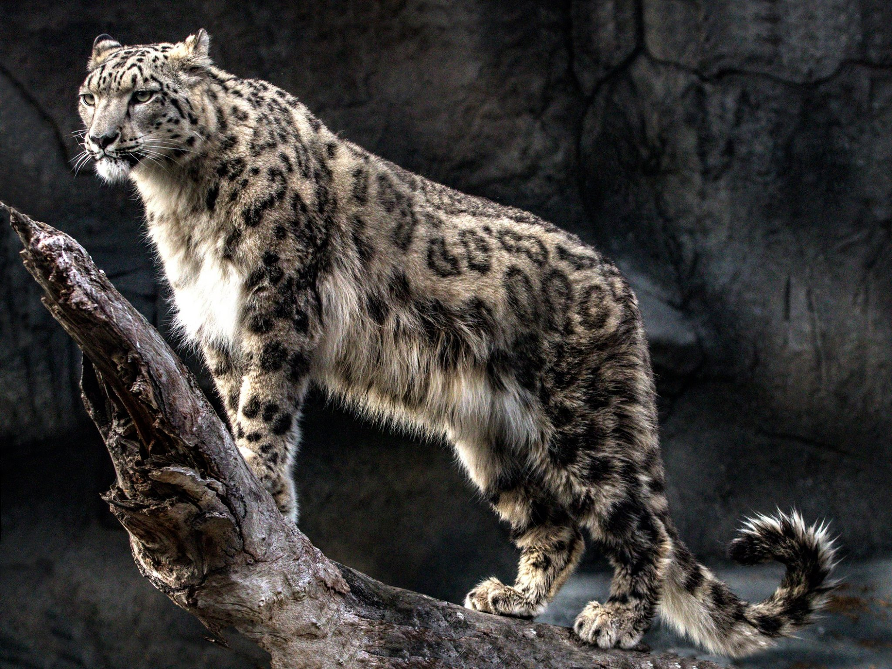
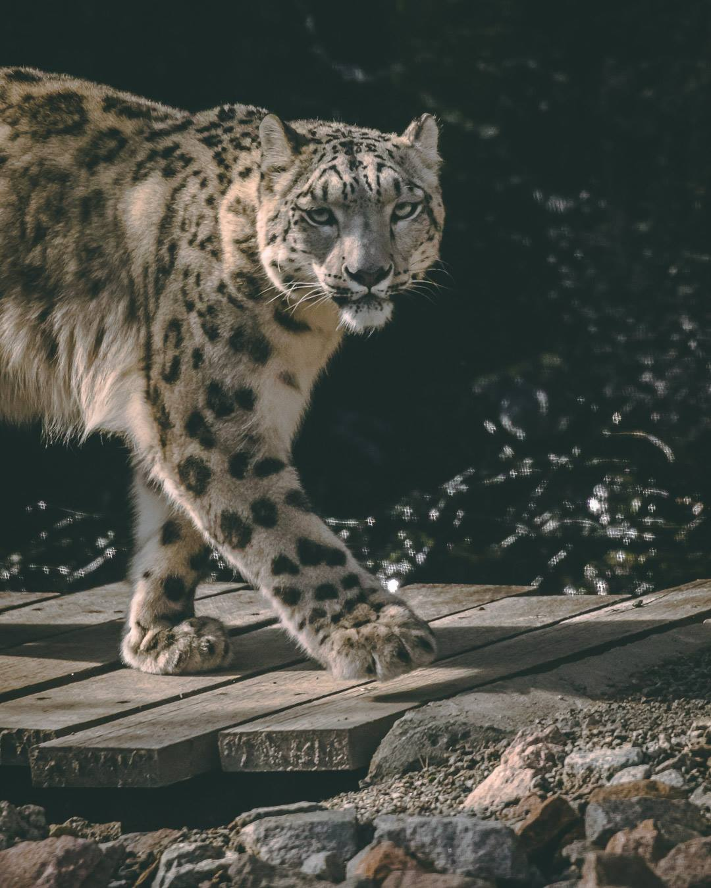
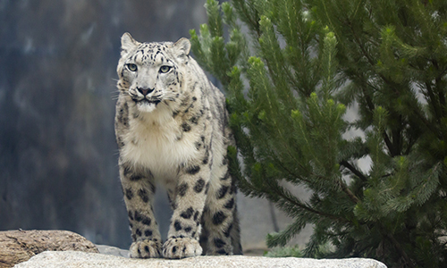
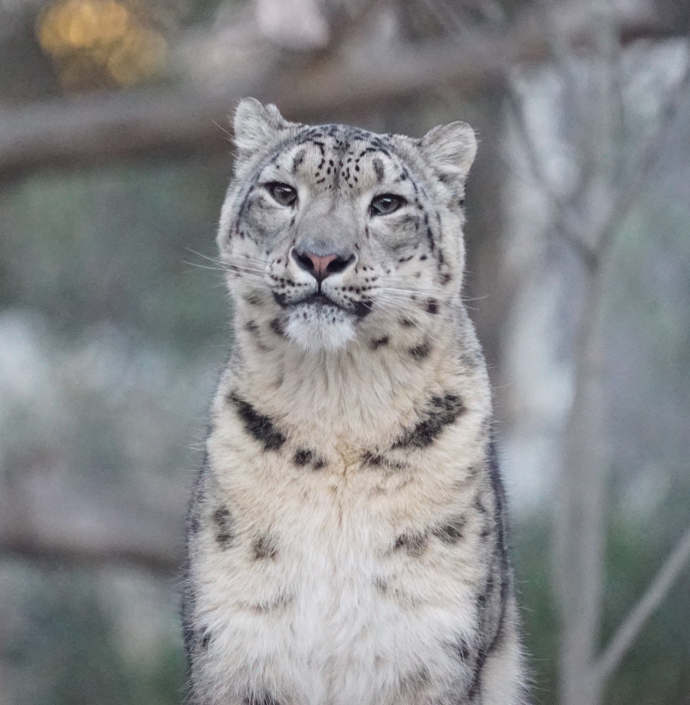
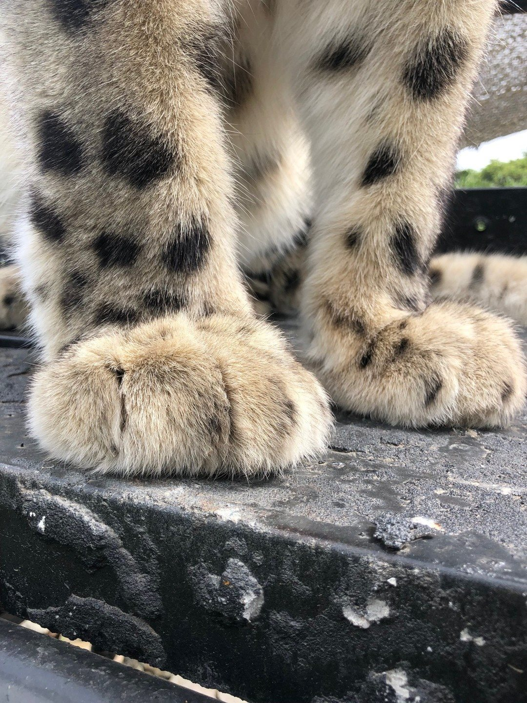
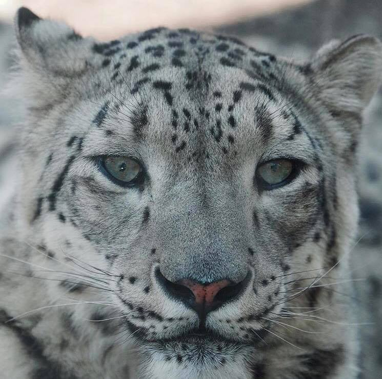
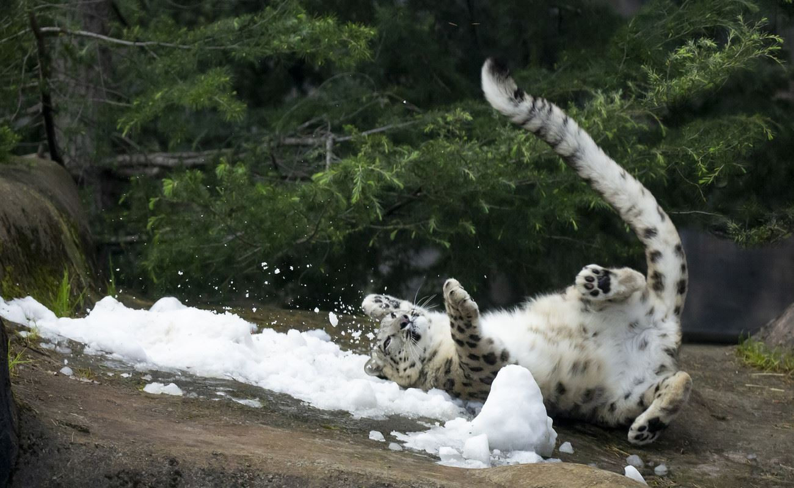
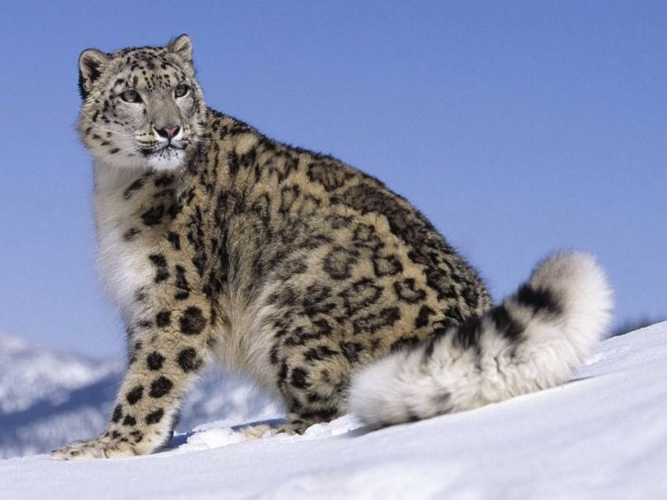
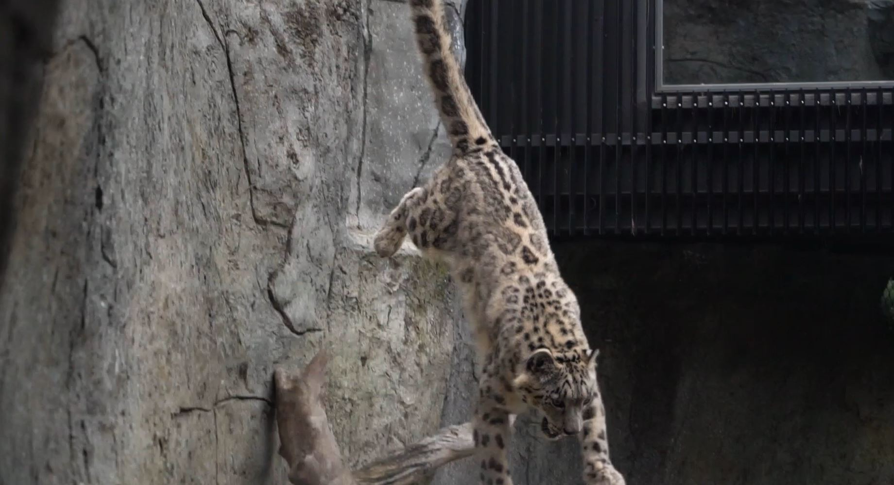

Home
Lemurs
Snow Leopards
Snow Leopards


Snow Leopards are considered Vulnerable .
It is estimated that only 2,700-3,400 remain in the wild


The Melbourne Zoo is home to two adult snow leopards, Miska and Kang Ju. They are apart of an international breeding program meant to help preserve the species and fight against extinction.
They are threatened by poaching and mining developments.
The Snow Leopard is one of the world's most elusive and solitary animals.
- Snow Leopard Habitat
- They live in harsh mountain enviroments.
- Some countires Snow Leopards can be found in are India, Nepal, China, Pakistan and Afghanistan.
- How They Adapt
- They have a thick, patterned fur coat to keep them warm and help them to blend into their rocky habitat.
- Their eyesight is six times sharper than humans.
- Their paws help distribute their weight to stop them from sinking into the snow.
- The paws also have fur on the botttom to lessen heat loss as well as protect their feet from sharp object and increase their grip.

International Snow Leopard Day is October 23!
The zoo uses the day to raise awareness about the problems Snow Leopards face in the wild.
Some ectivitied that are included on this day are special keeper talks, training and enrichment sessions, face painting, and a fact table for guests to explore.



Click Here to Meet the New Snow Leopard cubs!
